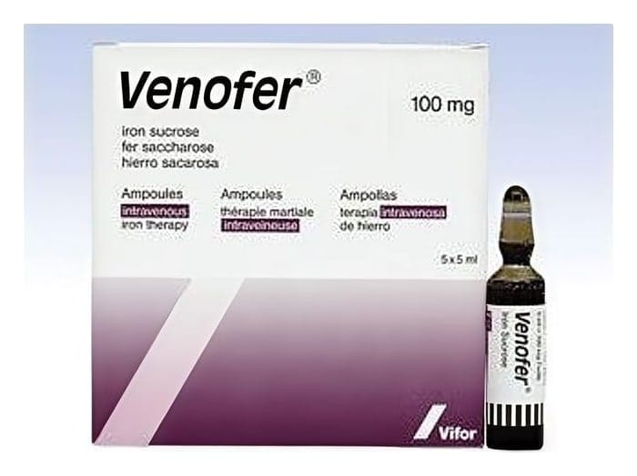

Venofer 100 mg/5 ml IV Enjeksiyonluk Çözelti, 5 Adet

Ne için kullanılır
KT · Bölüm 1VENOFER her ampulde (5 ml) 100 mg (20 mg/ml) elementer demire eşdeğer 2550-2850 mg ferrik hidroksit sükroz kompleksi içerir. VENOFER demir yetmezliğine bağlı kansızlık durumlarında damar içine uygulanmak üzere geliştirilmiş bir ilaçtır.
Her kutuda 5 ampul VENOFER vardır.
VENOFER’in aktif maddesi olan demir, kanda oksijen taşınması için gerekli olan bir maddedir. Demir, kan hücreleri içinde hemoglobin adlı bir maddenin yapısında bulunur ve oksijen taşımakla görevlidir. Bu ilacı kullanmaya başlamadan önce bu KULLANMA TALİMATINI dikkatlice okuyunuz, çünkü sizin için önemli bilgiler içermektedir.
• Bu kullanma talimatını saklayınız. Daha sonra tekrar okumaya ihtiyaç duyabilirsiniz. • Eğer ilave sorularınız olursa, lütfen doktorunuza veya eczacınıza danışınız. • Bu ilaç kişisel olarak sizin için reçete edilmiştir, başkalarına vermeyiniz. • Bu ilacın kullanımı sırasında, doktora veya hastaneye gittiğinizde doktorunuza bu ilacı kullandığınızı söyleyiniz. • Bu talimatta yazılanlara aynen uyunuz. İlaç hakkında size önerilen dozun dışında yüksek veya düşük doz kullanmayınız.
VENOFER; • Mide-bağırsak sisteminden demirin emilmesinde bozulma nedeniyle kansızlık gelişmişse, • Mide-bağırsak sistemindeki şiddetli kanama nedeniyle demir eksikliğine bağlı kansızlık gelişmişse, • Midenin tamamının veya bir kısmının alınması nedeniyle demir eksikliği ve kansızlık gelişmişse, • Demir eksikliğine bağlı kansızlığı olan ve ağız yoluyla alınan demiri tolere edemeyen hastalarda, • Demir eksikliği nedeniyle kansızlık gelişen ve ağız yoluyla alınan demirin yeterli düzeyde etki göstermediği hastalarda, • Doktorunuz, demir depolarınızın hızla doldurulmasının gerektiğine ve bu nedenle demir uygulanmasına karar verdiyse, • Eritropoetin (EPO) (kan yapımını uyaran bir hormon) tedavisi alan diyaliz (kanın temizlenmesi işlemi)e bağımlı olan veya olmayan kronik böbrek yetmezliği hastalarında demir eksikliği varlığında kullanılır.
VENOFER gebeliğin ilk 3 aylık döneminde önerilmemelidir. Gebeliğin ikinci ve üçüncü 3 aylık döneminde ise hekimin zorunlu bulduğu hallerde kullanılmalıdır.